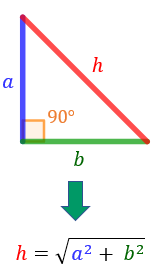

-
Teorema de Pitàgores (30 punts)
Es vol calcular l'hipotenusa d'un triangle rectangle, coneixent els seus catets.
El teorema de Pitàgores diu que l'hipotenusa és l'arrel quadrada de la suma dels quadrats dels catets.Requisits:
- Donats dos catets, calcular l'hipotenusa.
- Han de ser números positius.
- Arrodoneu el resultat a 2 decimals.
- Heu d'avisar a l'usuari si falten dades.
 -
Llançament de daus (40 punts)
Es vol simular el llançament continu de dos daus. Si són iguals, felicitar l'usuari.
Requisits:
- S'han de generar constantment tirades aleatòries dels daus
- Mostrar una imatge de cada dau amb el número obtingut.
- Quan s'atura, si els daus són iguals, mostrar un missatge d'enhorabona.
- El botó "Llança" també serveix per aturar (ha de canviar el text i el color de fons).
-
Dark Mode (30 punts)
S'ha de canviar l'estil de la pàgina a mode fosc.
Requisits:
- El fons passa a ser obscur.
- El text és clar.
- Canviau les classes necessàries (ja són al CSS).
- El botó també ha de canviar (de Sol a Lluna): fa-moon → fa-sun.

Aplicacions Web - Examen JS - 24/02/2025